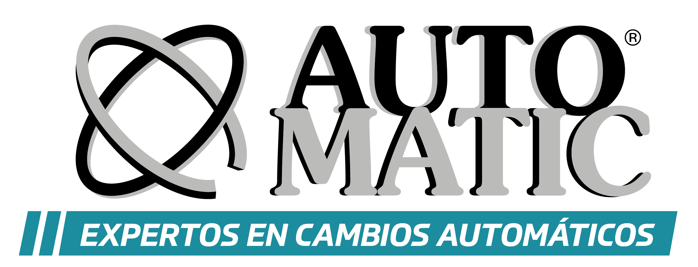
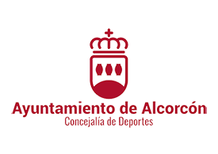

Temporada 2025-2026 — Formamos y educamos desde el deporte que más nos gusta, el baloncesto.
Club Baloncesto Alcorcón
Fundado en 1989 · Alcorcón, Madrid
Bienvenidos al CB Alcorcón
El Club Baloncesto Alcorcón fue fundado en junio de 1989 con el nº de registro 2031 en el Registro de Asociaciones Deportivas de la Comunidad de Madrid. La idea partió de un grupo de padres de la Escuela Municipal de Baloncesto de Alcorcón.
Más de 35 años después somos uno de los clubes de baloncesto base más activos del sur de Madrid, con equipos en todas las categorías y convenios de colaboración con el Real Madrid en las categorías Infantil y Junior.
Conócenos mejorÚltimas noticias
- Hojas de inscripción Temporada 2025-2026 disponibles Documentos · Temporada 2025/2026
- XXXV Torneo Ciudad de Alcorcón — Fiestas Patronales Evento anual · Edición número 35
- Colaboración con el Real Madrid en Infantil y Junior Proyecto deportivo · Temporada 2024/2025
- Nueva escuela BabyBasket en el C.P. Federico García Lorca Escuela de formación · Alcorcón
Patrocinadores y colaboradores


© 2025 Club Baloncesto Alcorcón